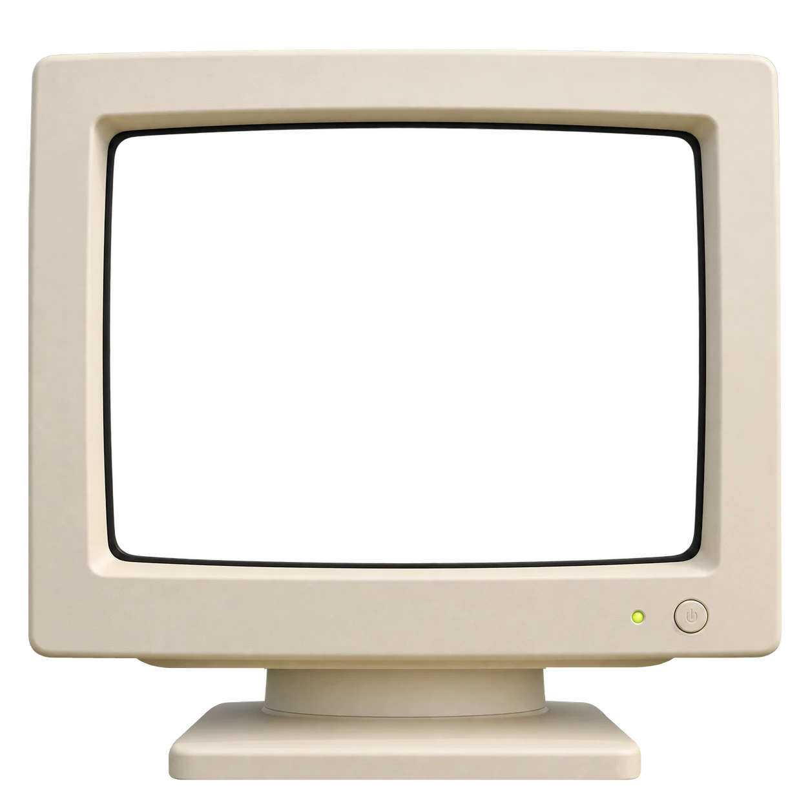
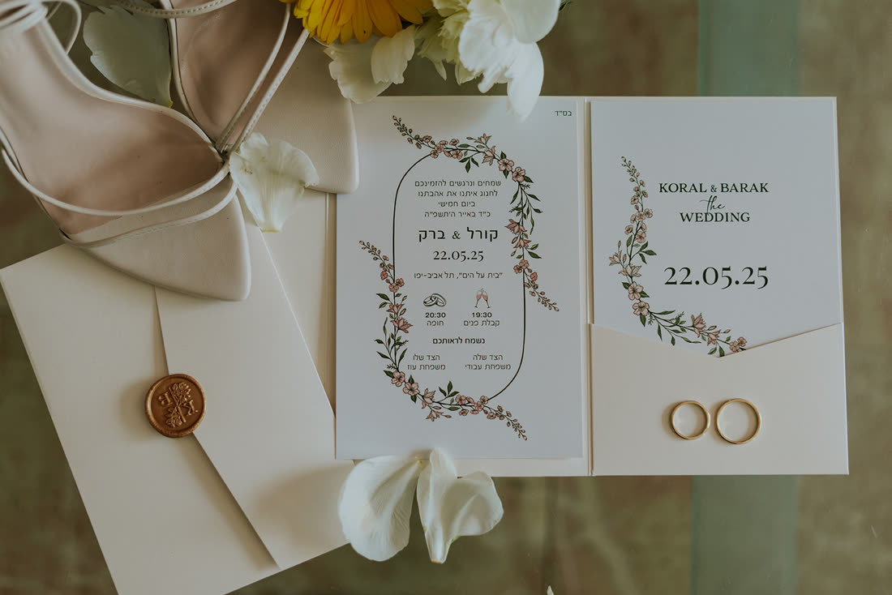

Designer, illustrator, animator. From the first idea to the real thing.

Invitations and everything around the day, designed for one couple at a time.

Inbal Oz is a graphic designer working on the line between paper and screen. I build identities, packaging and invitations you want to hold, and I draw when words are not enough.
This text is a draft. We will write it together, in your words.
Contact / Availability
Tell me what you are making, and we will find how it should look.